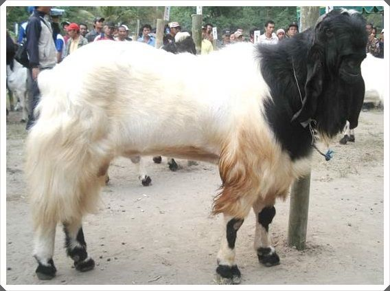
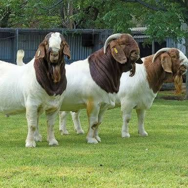
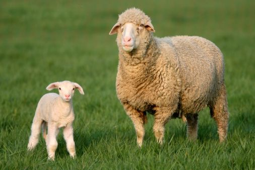

Mewujudkan Kualitas Hewan Ternak Terbaik
BERKAH FARM hadir untuk memenuhi kebutuhan hewan ternak berkualitas, sehat, dan unggul.
Lihat Produk KamiSelamat Datang di BERKAH FARM
Kami adalah peternakan modern yang berdedikasi untuk menghasilkan hewan ternak berkualitas tinggi. Dengan pengalaman bertahun-tahun dan komitmen terhadap kesejahteraan hewan, kami bangga menyediakan berbagai jenis kambing dan domba yang sehat dan produktif.
Kualitas Terjamin
Hewan ternak kami dipelihara dengan standar nutrisi dan kesehatan terbaik.
Pelayanan Profesional
Kami melayani dengan sepenuh hati untuk kepuasan pelanggan.
Kesejahteraan Hewan
Prioritas utama kami adalah lingkungan yang nyaman dan sehat bagi ternak.
Produk Unggulan Kami

Kambing Etawa Kaligesing
Kambing dwi-fungsi (penghasil susu dan daging) yang populer di Indonesia.

Kambing Boer
Ras pedaging unggulan dengan pertumbuhan cepat.

Domba Merino
Domba penghasil wol berkualitas tinggi dan daging lezat.